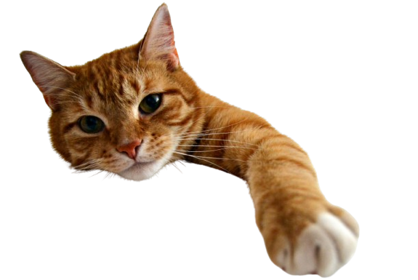

pyari pari, Happy Birthday! My fellow, my param mahila mitr, I hope I was there by holding a gift for you on your special day, par afoos ye possible nhi hai abhi, par ek din hum jur milenge aur vo jo bhi date hogi, hum usse bhul kr apke jaanam din celebrate krenge. apko pta hai, ye likhte waqt bhi mere chehre par jo smile hai, kbhi socha bhi nhi tha ek random si question se baat start hokr yetni dur aa jayegi aur mai kisi ka param purush mitr ban jaunga. Dead people receive more flowers than the living ones, because regret is stronger than gratitude. - Anne Frank aise logo ko andaza bhi nhi hai, I have my Moti Pari. ye phool ki baat krte hai, mera bas chale toh mai har din bagan le aau apki dehliz pe. mere life me bahut kam lucky log hai jinko mere pyare haath aur pyare hato se phool naseeb hota hai, and you're the luckiest one. Thanks for lifting me up in my lows, for listening to me, for empathizing with me, and for giving me comfort so I can tell you everything without the fear of judgment. Thank you for always replying so quickly and for being my param mahila mitr. Your param purush mitr wants to hold a bunch of sunflowers for you when we meet. He wants to see you happy, but in that moment, I’ll be even happier, because I’ll finally get to see a real fairy in this doggies world. jiski kahani chote se sunta aa raha hu, ab finally usse dekh pa raha hu. ye soch kar ke hi mai itna khush ho raha hu, aap andaza nhi laga payenge. aap dekhenge mujhko aur aap bhi muskurayenge. kehne ko toh itna hai ki shabd khatam ho jayenge, par aapki tareef nhi, par filhal ke liye itna hi rehne dete hai, my Moti Pari. stay the same, thodi si crazy, thodi si soft, thodi si strong, aur mere liye hamesha meri Moti Pari rehna. once again, happy birthday! tumhara, param purush mitr (Anaconda/Supari/Harsh ji)
